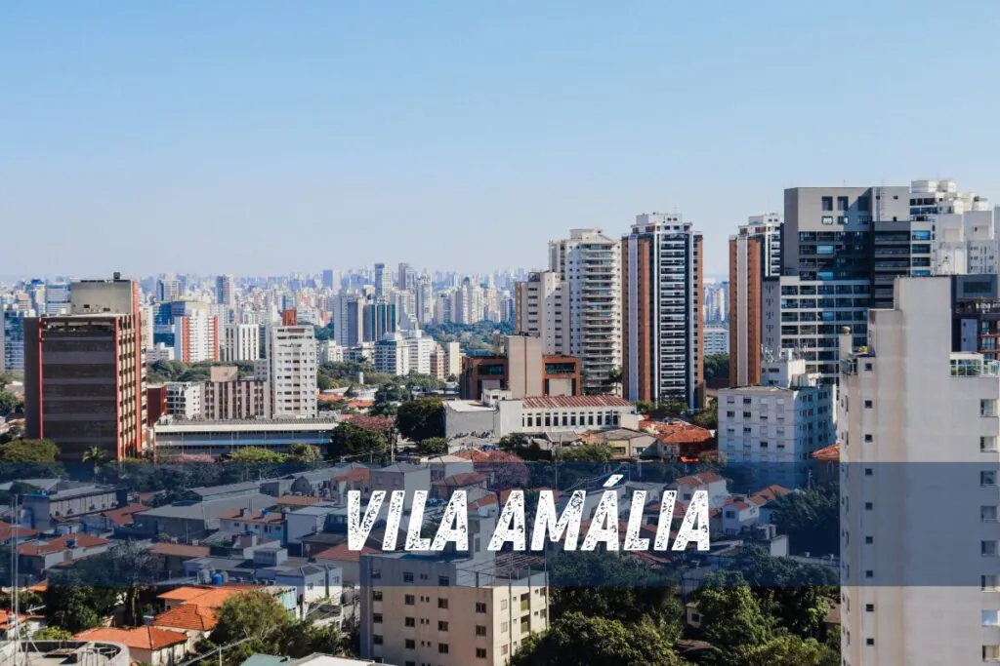
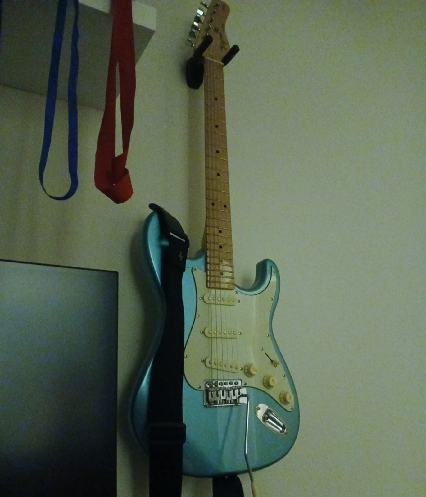
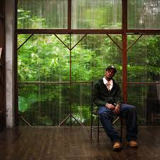

Prazer, eu sou
Osmar
Minha página pessoal
Olá! Eu sou o Osmar, tenho 16 anos e moro na Zona Norte de São Paulo.
Esta página reúne um pouco sobre mim, meus interesses e os lugares que já visitei ou quero conhecer.


01
Quem eu sou
Meu nome
Meu nome completo é Osmar Felipe de Carvalho.
Minha cidade
Moro na Vila Amalia, na Zona Norte de São Paulo, perto do Horto Florestal.
02
O que eu gosto de fazer
Aprender guitarra
Estou aprendendo a tocar guitarra.
Usar Linux
Uso Linux como meu sistema principal.
Jogar videogame
Gosto de jogar videogame.
Ouvir música
Adoro ouvir música, principalmente hip-hop e R&B.
Ler
Também gosto muito de ler.


03
Meus gostos
Música
Meu principal gênero é hip-hop, mas recentemente comecei a escutar R&B. Também tenho ouvido boombap e trap.
Artistas que escuto
- BK'
- Alec'
- Ryan Fidelis
- Sotam
- Alee
- Djonga




04
Lugares que já visitei
Eu nunca saí do Brasil. Estes são alguns lugares que já visitei:
- Maceió - Alagoas
- Guapiaçu - São Paulo
- Andradina - São Paulo
- Socorro - São Paulo
- Serra Negra - São Paulo
- Guarujá - São Paulo
- Campos do Jordão - São Paulo
- Ubatuba - São Paulo
- São Pedro - São Paulo
- Seara - Santa Catarina
- Florianópolis - Santa Catarina
- Balneário Camboriú - Santa Catarina
- Poços de Caldas - Minas Gerais


05
Lugares que quero conhecer
Eu sonho em conhecer muitos países, entre eles: